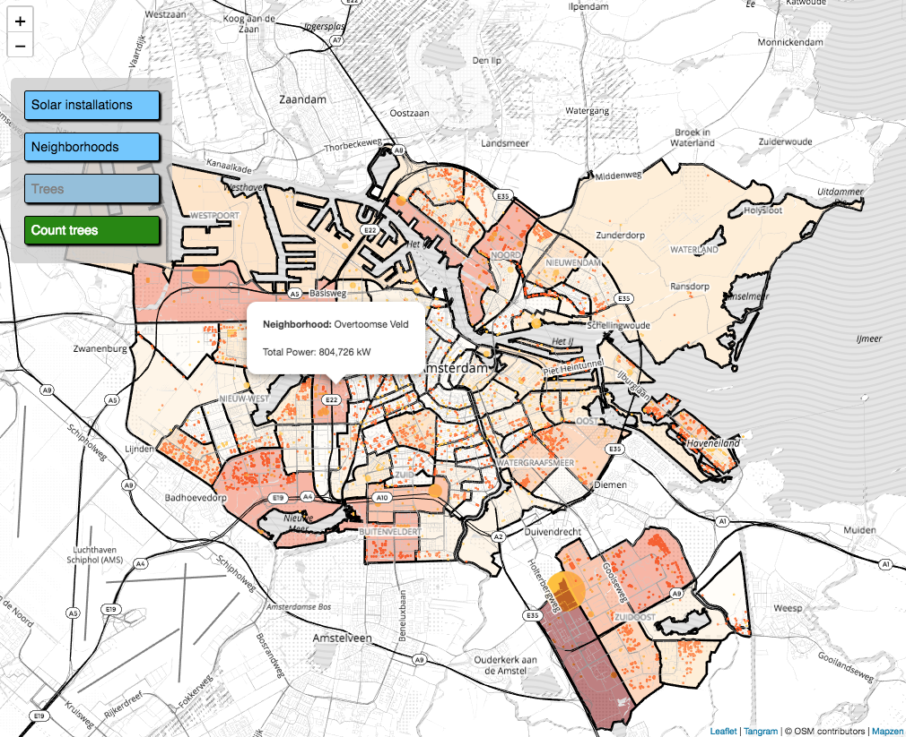
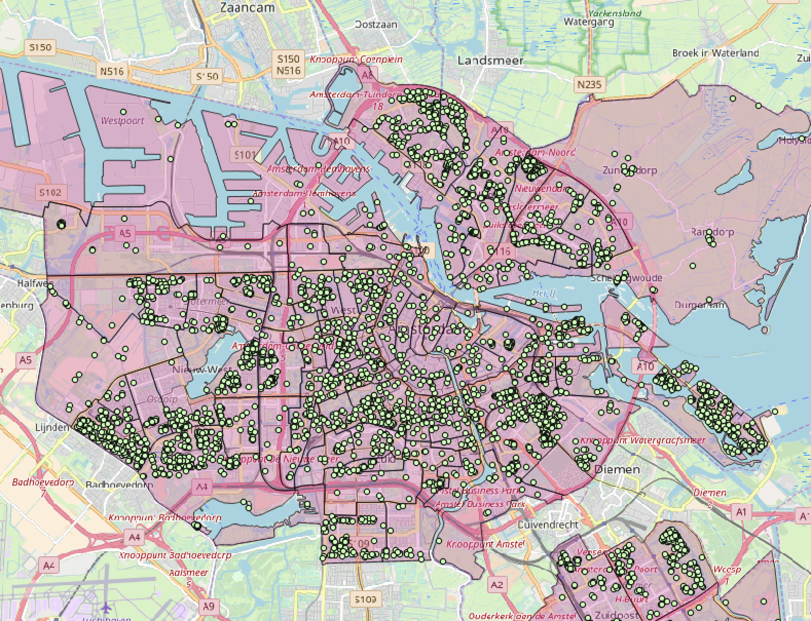
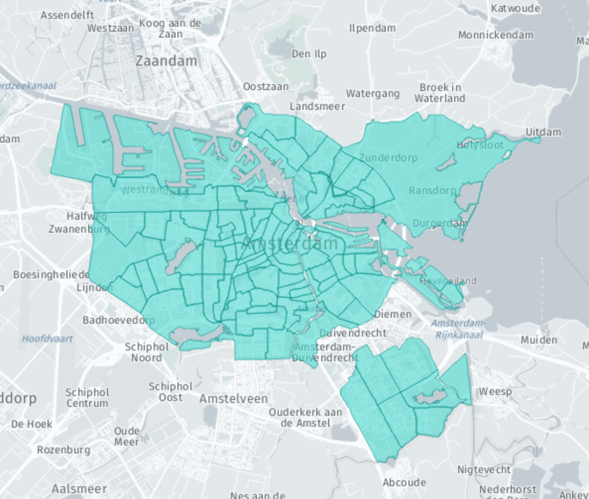

This tutorial shows you how to create a Tangram map using data from XYZ Spaces. Tangram can display vector data and handle many more points than Leaflet alone.
What you'll learn
- The basics of managing multiple XYZ spaces
- The fundamentals of using tiled data
- How to view your data in Tangram, using the tiled data endpoint
- How to query data from XYZ using bounding box queries.
Prerequisites
- Basic familiarity with the command line
- Basic familiarity with JavaScript
In this demo we'll download several public datasets for the city of Amsterdam and combine them in various ways in an interactive map.

In this demo, we'll use open data provided by the City of Amsterdam. We'll look at two sources of data: solar panel installations, and street trees.
The solar data is available to download, but the default visualization of the data is not particularly informative.

Let's also download some tree data and upload both to their own XYZ spaces.
Create a space for the solar panels ("zonnepanelen" in Dutch) and the tree data ("bomen"):
here xyz create --title "solar panels" --message "Amsterdam solar panels"
here xyz create --title "trees" --message "Amsterdam trees"
Throughout this tutorial whenever you see SpaceID1 or SpaceID2, replace these with the Space IDs generated by those create commands.
Now upload the data to those two spaces:
here xyz upload -f ZONNEPANELEN2017.json [SpaceID1]
here xyz upload -f BOMEN.json [SpaceID2]
To make the solar panel data more interpretable, let's try aggregating solar installations at the neighborhood level. To do so, we'll also need a dataset of Amsterdam neighborhood boundaries.

We won't upload that to a space yet. We're going to combine it with the solar data first.
We'll write a node script to find the total solar power generated in each neighborhood and save it to a new GeoJSON file, using turf.
const fs = require('fs');
const turf = require('@turf/turf');
const NEIGHBORHOODS_FILE = './GEBIED_BUURTCOMBINATIES_EXWATER.json';
const SOLAR_FILE = './ZONNEPANELEN2017.json';
const OUT_FILE = './heatmap.json';
var nhoods = JSON.parse(fs.readFileSync(NEIGHBORHOODS_FILE, {encoding: 'utf8'}));
var solar = JSON.parse(fs.readFileSync(SOLAR_FILE, {encoding: 'utf8'}));
nhoods.features.forEach(function(feature) {
// get list of solar panels within neighborhood polygon
var points = turf.pointsWithinPolygon(solar, feature)
// add total number of panels as property to neighborhood
feature.properties.count = points.features.length;
// add total power generated as property to neighborhood
feature.properties.totalPower = 0;
points.features.forEach(function(point) {
feature.properties.totalPower += +point.properties.Vermogen;
});
});
fs.writeFileSync(OUT_FILE, JSON.stringify(nhoods), {encoding: 'utf8'})
After installing turf with npm install @turf/turf, we can run this preprocessing script with node process.js, which will generate a file named heatmap.json. Finally, let's upload this to an XYZ space. This will be your third space, which we will call SpaceID3.
here xyz create --title "heatmap" --message "Neighborhood heatmap of solar power production"
here xyz upload -f heatmap.json [SpaceID3]

The XYZ API supports tiling vector data, which lets us only load the data in chunks so that we only get the data that we need to display at that moment. To use this tiled endpoint, we need a map client that supports tiling. We'll use Tangram, an open-source WebGL based map viewer.
First, we'll create a boilerplate Tangram map, just like we did with Leaflet. The HTML for our map looks like this. Notice that we are creating a Leaflet map in much the same way as we did previously, but we are adding a Tangram layer to it.
<!doctype html>
<html lang="en-us">
<head>
<meta charset="utf-8">
<meta http-equiv="Content-Type" content="text/html; charset=utf-8">
<meta name="viewport" content="width=device-width, initial-scale=1.0, maximum-scale=1.0, user-scalable=no">
<title>Amsterdam Solar Energy</title>
<link rel="stylesheet" href="https://unpkg.com/leaflet@1.3.3/dist/leaflet.css" />
<link rel="stylesheet" href="leaflet-areaselect.css" />
<style>
body {
margin: 0px;
border: 0px;
padding: 0px;
font-family: Helvetica, Arial, sans-serif;
}
.container {
top: 0;
left: 0;
right: 0;
bottom: 0;
position: absolute;
}
#map {
height: 100%;
width: 100%;
}
#controls {
position: absolute;
left: 1em;
top: 100px;
z-index: 1000;
background-color: rgba(200, 200, 200, 0.75);
/* display: none; */
width: 200px;
height: 230px;
border-radius: 6px;
}
#controls div {
margin: 16px;
padding: 0.5em;
background-color: hsl(204, 100%, 72%);
border: 1px solid black;
border-radius: 3px;
color: black;
box-shadow: 2px 2px 2px black;
}
#controls div.off {
background-color: hsl(204, 50%, 72%);
color: gray;
}
#controls div:hover {
background-color: dodgerblue;
margin-top: 16px;
margin-bottom: 16px;
color: white;
box-shadow: 4px 4px 4px black;
}
#controls div#counttrees {
background-color: #228800;
color: white;
}
#controls div#counttrees:hover {
background-color: #44AA00;
box-shadow: 4px 4px 4px black;
}
</style>
</head>
<body>
<div class="container">
<div id="map"></div>
</div>
<!-- leaflet -->
<script src="https://unpkg.com/leaflet@1.3.3/dist/leaflet.js"></script>
<!-- Main tangram library -->
<script src="https://unpkg.com/tangram/dist/tangram.min.js"></script>
<!-- Demo setup -->
<script>
var map = L.map('map', {boxZoom: false});
var layer = Tangram.leafletLayer({
scene: 'scene.yaml',
attribution: '<a href="https://mapzen.com/tangram" target="_blank">Tangram</a> | © OSM contributors | <a href="https://mapzen.com/" target="_blank">Mapzen</a>'
});
layer.addTo(map);
// center of amsterdam
map.setView([52.372548, 4.893920], 12);
</script>
</body>
</html>
This Tangram layer loads and styles vector data sources, which are defined in a seperate "scene" file, scene.yaml in this case.
Create a scene.yaml file, and add these lines:
import:
- https://www.nextzen.org/carto/refill-style/refill-style.zip
- https://s3.amazonaws.com/xyz-demo/data/demo.yaml
- https://www.nextzen.org/carto/refill-style/themes/label-5.zip
Those import statements will load a some external stylesheets data that will make up the background of our Tangram map.
To load our own XYZ data on top of this map, we'll need to add a source to our scene file for each dataset. The tiled endpoint has this format: https://xyz.api.here.com/hub/spaces/[SpaceID]/tile/web/{z}_{x}_{y}.
You will also need to provide an AccessToken.
Add these lines to your scene.yaml file, replacing the Space IDs and your AccessToken:
sources:
solar:
url: https://xyz.api.here.com/hub/spaces/[SpaceID1]/tile/web/{z}_{x}_{y}
url_params:
access_token: [AccessToken]
clip: true
type: GeoJSON
neighborhoods:
url: https://xyz.api.here.com/hub/spaces/[SpaceID3]/tile/web/{z}_{x}_{y}
url_params:
access_token: [AccessToken]
clip: true
type: GeoJSON
trees:
url: https://xyz.api.here.com/hub/spaces/[SpaceID2]/tile/web/{z}_{x}_{y}
url_params:
access_token: [AccessToken]
clip: true
type: GeoJSON
Now that we've loaded those data sources, we need to instruct Tangram to draw some of them on the map. Let's draw the solar data by adding a new "layer" to scene.yaml:
layers:
_solar:
data: {source: solar}
enabled: true
_all:
draw:
points:
collide: false
color: "#000000"
size: 5
Putting the HTML file and scene.yaml in the same folder lets us open up our basic map!

The basic map shows our data, but it doesn't visualize it. Let's define some of the layer styles so that the data drives the visualization.
We can change the definition of the _solar style so that the size and color of the points reflect the amount of power that each solar panel produces. This replaces the simple style that we defined in the previous step.
_solar:
data: {source: solar}
enabled: true
_all:
draw:
points:
collide: false
color: |
function() {
if (feature.Functie == 'Wonen') {
return '#FF5306';
} else {
return '#FFC12B';
}
}
size: |
function() {
var value = +feature.Vermogen;
var size = Math.max(value/20000, 3);
// If we are zoomed in very far, make the points bigger
if ($zoom > 13) {
return Math.pow(2, $zoom - 13) * size;
}
return size;
}
In this YAML file, the size attribute is actually a Javascript function! It is capable of accessing properties in the GeoJSON feature ("vermogen" is Dutch for "capacity") and of the current map view ($zoom.) The value returned by the function is the size of the point.
Let's take advantage of our preprocessed neighborhood boundaries, and draw neighborhoods as a chloropleth based on total power generated.
_neighborhoods:
enabled: true
data: {source: neighborhoods}
draw:
polygons:
interactive: true
order: global.sdk_order_under_water_0
color: |
function() {
var value = feature.totalPower;
var color = value >= 1267538 ? "rgba(127, 0, 0, 0.5)" :
value >= 1140784.2 ? "rgba(167, 4, 3, 0.5)" :
value >= 1014030.4 ? "rgba(200, 29, 19, 0.5)" :
value >= 887276.6 ? "rgba(224, 69, 48, 0.5)" :
value >= 760522.8 ? "rgba(241, 108, 73, 0.5)" :
value >= 633769 ? "rgba(250, 142, 93, 0.5)" :
value >= 507015.2 ? "rgba(253, 176, 122, 0.5)" :
value >= 380261.4 ? "rgba(253, 202, 148, 0.5)" :
value >= 253507.6 ? "rgba(253, 220, 175, 0.5)" :
value >= 126753.8 ? "rgba(254, 235, 207, 0.5)" :
"rgba(255, 247, 236, 0.3)";
return color
}
lines:
interactive: true
order: global.sdk_order_under_roads_0
color: black
width: 3px
Notice that instead of drawing points:, we are now drawing polygons and lines. Here we use the Tangram order property so that the neighborhood boundaries show up underneath roads and water features on the map.
Draw trees with a variable size based on tree trunk diameter.
_trees:
enabled: true
data: {source: trees}
draw:
points:
collide: false
color: '#00A000'
size: |
function() {
var value = feature.Stamdiameter;
var size = value == "0 - 10 cm" ? 1.5 :
value == "11 - 20 cm" ? 2 :
value == "21 - 30 cm" ? 2.5 :
value == "31 - 50 cm" ? 3.25 :
value == "51 - 75 cm" ? 4 :
value == "76 - 100 cm" ? 5 :
1.5;
if ($zoom > 13) {
return Math.pow(1.5, $zoom - 13) * size;
}
return size;
}
Let's add these new style definitions to scene.yaml and take a look. Now the map is starting to visualize the data.

In this step, we'll add a popup that displays the total power generated in a neighborhood when the user hovers over a neighborhood polygon. To do this, we'll change the Tangram layer definition to include a hover event.
var layer = Tangram.leafletLayer({
scene: 'scene.yaml',
attribution: '<a href="https://mapzen.com/tangram" target="_blank">Tangram</a> | © OSM contributors | <a href="https://mapzen.com/" target="_blank">Mapzen</a>',
events: {
hover: function(selection) {
if (mode === 'solar') {
if (selection.feature) {
showPopup(selection.leaflet_event.latlng, selection.feature.properties.Buurtcombinatie, selection.feature.properties.totalPower);
} else {
map.closePopup();
}
}
}
}
});
This hover event calls a function that creates a Leaflet popup at the appropriate place on the map. We'll add the name of the neighborhood and format the numbers so they look nice. This code block can be added to the index.html file directly below the map definition.
function formatNumber(x) {
return x.toString().replace(/\B(?=(\d{3})+(?!\d))/g, ",");
}
// popups
var popup = L.popup({closeButton: false});
function showPopup(latlng, name, power) {
popup
.setLatLng(latlng)
.setContent('<p><strong>Neighborhood:</strong> ' + name + '</p><p>Total Power: ' + formatNumber(power) + ' kW</p>')
.openOn(map);
}
It could still use a little more interactivity though.
Let's give the user the ability to draw a rectangle on the screen, and then use this as a bounding box query to the XYZ API. We're going to use a Leaflet extension called Leaflet-AreaSelect, which provides a nice user interface for drawing a bounding box. Then we trigger a query to the XYZ API's bbox endpoint. This XYZ API call takes two latitude and longitude parameters and returns only the points in a space that fall within that bounding box:
'https://xyz.api.here.com/hub/spaces/[SpaceID2]/bbox?access_token=[AccessToken]&west=' + west + '&south=' + south + '&east=' + east + '&north=' + north;
To calculate the street trees within a particular bounding box, we simply have to get the bounds from Leaflet-AreaSelect, make the API call, and count the number of features returned.
var bounds = this.getBounds();
var spaceID = [SpaceID2];
var accessToken = [AccessToken];
var url = 'https://xyz.api.here.com/hub/spaces/' + spaceID + '/bbox?access_token=' + accessToken + '&west=' + bounds.getWest() + '&south=' + bounds.getSouth() + '&east=' + bounds.getEast() + '&north=' + bounds.getNorth();
fetch(url).then((response) => response.json()).then(function(data) {
var len = data.features.length;
// display a nice popup
L.popup().setLatLng(map.getCenter()).setContent(formatNumber(len) + ' trees selected').openOn(map);
});
We won't add this to our code yet though, because we need some way to trigger the Leaflet-AreaSelect first. In the final step, we'll put everything together.
Finally, we'll add some user interface controls for turning layers off and on. Add the following block to index.html just above the <div id="container"> block.
<div id="controls">
<div id="solar" class="on" onclick="toggle('solar')">Solar installations</div>
<div id="neighborhoods" class="on" onclick="toggle('neighborhoods')">Neighborhoods</div>
<div id="trees" class="off" onclick="toggle('trees')">Trees</div>
<div id="counttrees" class="off" onclick="countTrees()">Count trees</div>
</div>
These buttons will trigger a Javascript function that toggles each layer off and on. Add the remainder of the Javascript to the end of the <script> block in index.html.
var mode = 'solar';
function toggle(layerName) {
layer.scene.config.layers["_" + layerName].enabled = !layer.scene.config.layers["_" + layerName].enabled;
document.getElementById(layerName).className = layer.scene.config.layers["_" + layerName].enabled ? "on" : "off";
layer.scene.updateConfig();
}
The "count trees" button will trigger a function that adds the bounding box selector to the map and triggers the bounding box query we prototyped earlier.
function countTrees() {
if (mode === 'trees') {
areaSelect.remove(); d
mode = 'solar';
} else {
mode = 'trees';
areaSelect = L.areaSelect({width:200, height:300}); // Need to make a new one each time for some reason
areaSelect.addTo(map);
function calcArea(bounds) {
if (mode == 'trees') { // Prevent this from accidentally running in the other mode
map.spin(true);
var spaceID = [SpaceID2];
var accessToken = [AccessToken];
var url = 'https://xyz.api.here.com/hub/spaces/' + spaceID + '/bbox?access_token=' + accessToken + '&west=' + bounds.getWest() + '&south=' + bounds.getSouth() + '&east=' + bounds.getEast() + '&north=' + bounds.getNorth();
fetch(url).then((response) => response.json()).then(function(data) {
var len = data.features.length;
map.spin(false);
L.popup().setLatLng(map.getCenter()).setContent(formatNumber(len) + ' trees selected').openOn(map);
});
}
};
calcArea(areaSelect.getBounds()); // Run it once at load time
areaSelect.on("change", function() {
calcArea(this.getBounds()); // Then run it again anytime the box changes
});
}
}
And that's our final map!